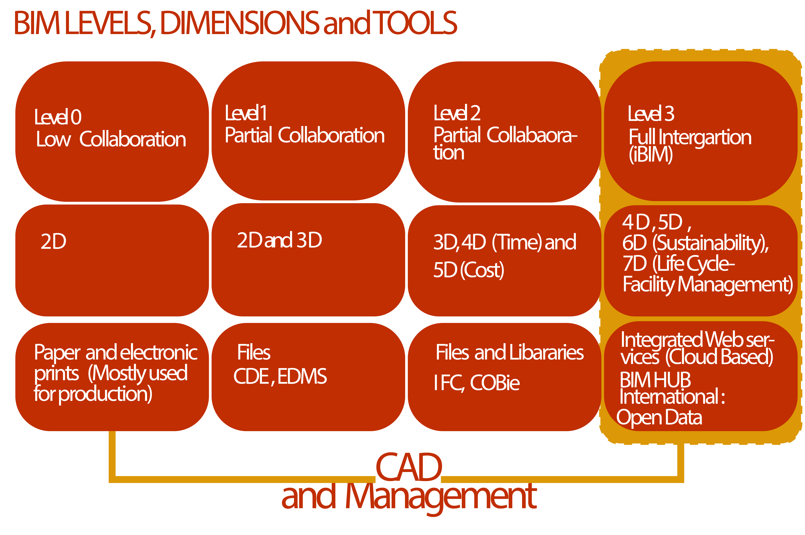

The figure shows portion of a typical title deed map awarded to land owners in ethiopia.
The above links are repeatedly placed for you at each subchapters of this section so that you can easily browse through the content as it is fairly long.
The following subchapters compare AutoCAD with other BIM strong software such as AutoCAD architecture, Revit architecture, etc. in the spirit of helping you maximize your effective usage of the software in effective documentation and collaboration. The subchapters discuss about current international practices and local practices and intended future plans of the built environment with regards to CAD services. This is so you can be locally aware and forward looking in your practice in related matters.
Looking in to the fact that you are a mid level engineer, the interface of the software is separately placed for you in the power point presentation package (link) so that you may visit it when you may need it, however the interface content is placed for you on this site and you can access it: chapter 3.2. You can use te image links and explore it.
This course recognizes the under utilization of the concept of parametric design and customization of the software through templates and script files (.lin, .scr, .lsp, .pat, etc.) in AutoCAD. The course will cover the usage and customization of built in templates such as .wlt and the recent tab of the software parametric while demonstration and exercises. Furthermore, at this level of the course (chapter), the course discusses about usage of custom hatches that are not script related, attributes, data extraction for usage locally in AutoCAD and externally in excel or other software.
On the latter chapter of the course the professional application of the software in preparation of documents for projects of different scale along with the implementation of script files mentioned above (.lin, .scr, .lsp, .pat, etc.) for fundamental engagement of users in sharing portable files and in a manner that it is done across projects and users.
As coined by Autodesk the acronym BIM (Building Information Modeling) represents the way Revit enables architects, designers, and engineers to capture decisions during the design process and incorporate them into the overall database that represents the 3D virtual prototype of the building. This concept perhaps not practiced effectively and entirely not in digital format has always been the intention and attempt of the built environment professional. In such regard to attain the intended qualities of BIM , the professional (planner, designer and engineer) needs to incorporate a very careful preparation phase before using AutoCAD software towards preparing documents and sharing them. AutoCAD architecture and other specialized products of Autodesk are more related to BIM than the standard AutoCAD software.
Common work processes ( in CAD): If we take a look at the common trends projects may start with a client that already acquired a land (through lease) or planning to acquire one. In large scale development, it is common get public invitation bid announcements through public Medias, newspapers for qualified consultants to participate in the design work needed the development. This scenario may differ for small projects such as a single family’s residential project, etc. Once the consultant buys the bid for large projects or gets approached by a small scale developer, client, he or she will acquire a terms of reference with a Procurement Reference Number. This provides the consultant with legal right to visit the indicated project site in the terms of reference for the intended task. He or she will visit the site and confirms the conditions described in the bid’s title deed map (site plan: boundaries, etc.) are correct. And furthermore the consultant collects further data he or she may need to prepare the design documents needed as per the bid, for the task the consultant uses surveyors and other related professionals for getting geo-information’s of the location. The terms of reference in addition to providing information about the project site it also passes regulations, design tasks, interest of the client, the format and type of digital information the client suggest for the submittals (for example architectural design drawings in .dwg format, report in .dox or .pdf format and presentations in panels, models and video animations). Below is an image of a typical title deed map consultants are presented by clients before starting to work on a project. Mind the indication of the visual and coordinate description of the site.
Therefore it is important to identify at what point the consultant needs to start digitizing exiting information and new once for the project at hand. Based on site information gained from the terms of reference and from the site visit or reconnaissance, the consultant begins to organize digital documents that will latter transform towards the preparation and compilation of the required documents to be submitted for the client for evaluation and further plans. The above discussion is mostly important to note that digital documentation and design process within construction developments has been made mandatory for many years, in Ethiopia for almost two decades. The new work processes intended (in CAD ): Currently there are indications that digital documentation in itself is not sufficient rather the standard (or quality) at which these documentations allow efficient work process throughout a development, hence the interest for implementation of BIM, which requires a central integrated three dimensional model meant to allow most if not all stakeholders involved in a development to collaborate, exchange interoperable data. This demand will have its challenges and success for various reasons. That can include: the provision of CAD and related software that can facilitate such work flow, the capacity of such design tools to incorporate various local work methods and cultures, impact on local economies and last but not least design and other professionals that might find the system difficult for them to shape development through their creative processes and outputs. However, the usual observation is that designers and other professionals long before the digital revolution have been working towards what these new developments are suggesting. Collaboration among different professionals was an interest of the ancient mater builder as the master builder coordinates different professionals towards an intended output. In this tutorial we will see how we can use AutoCAD effectively and conduct possible work processes and documentations. The general summary descriptions of BIM is indicated in the figure below. Students should use the abbreviations provided under the content table of this document to understand the acronyms used in the figure and follow the discussion in the tutorial video that will be provided.

Concerning interfaces it helps if you start by thinking that most software are now generally similar in their layout. If you use other software such as Microsoft Word, you will be familiar with many of the interface layout of AutoCAD as there are many similarities. Therefore mind how much of your interface/user experience from those software are transferable here and avoid feeling stranger to the interface. In AutoCAD, you will create and edit drawings in the model space, layout space (here more of title block elements than drawings not advised for drawings) and block editor interface. You will make other editing by filling out prompts in windows such as options (where you will fill your preferences, etc.), text and other styles in a similar fashion.
AutoCAD comes with pre-settings that are stored in drawing template files (.dwt). The default path to templates of AutoCAD (locations of the files , .dwt,) on your computer is : C + users + username + AppData + local + Autodesk + AutoCad 2021 + R240 + enu + Template. You can create your own templates by modifying these provided templates. You can not start AutoCAD with out using one of these templates. In fact if you would start AutoCAD for the first time and if you get to the start window and went on to starting a project with the default settings, it means you are using the .acad.dwt template file that is commonly the default template for most versions of AutoCAD. However you can create a new template and name it according to your interest.

You can change the default path of templates to wherever in your computer you may have saved the template you created so that you can find these template whenever you start your installed AutoCAD. To modify the path you will use the options service of the software by typing in the command line: option + enter and then select the files tab followed by other activities that will be covered further in to this course. You can also access the options window by pressing the AutoCAD application button on the software + selecting the option icon at the lower right coroner of the resulting popup window. The default templates for example (1) .acad.dwt comes with settings such as: the layer 0; two layout tabs (without title blocks), two styles ,standards and annotative, for text, dimension and leaders, a standard style for table ; light color theme, white viewport background color, grid, , line types and blocks, etc.
You can create custom line types hatches by making use of use of script files by creating them with in AutoCAD in the visual lisp window and make them part of your custom template. You can create script files such as lisp files (.lsp), line files (.lin) and pattern files (.pat) externally in notepad or other editors and integrate them back to AutoCAD. Such script files can also be found online and users can download them according to their needs Free Autodesk for educational purposes ( https://www.autodesk.com/education/edu-software/overview?sorting=featured&page=1 ). The latter ones will be covered in the latter subchapters of this AutoCAD package, professional application of AutoCAD. However, the general understanding of the interface are covered in the following pages of this document as follows:
Since we will be covering the basics of working in AutoCAD first, trainees should take in to account that they need to look out for information they would need for latter chapters of this training (Application of AutoCAD for Professional projects).
In order to follow through the coming demonstrations and practices, trainees should open AutoCAD and practically work on the
instructions that are given.
Navigation: Go to sample project files in AutoCAD software and open a sample file. The path to the sample file for this
exercise is:
(1) If you are at the start window you can click on ‘explore sample drawings’ and in the select file explorer
window you will be prompted to choose from the folders: Visual LISP, VBA, Sheet Sets, Mechanical Sample, en-us, Database
Connectivity and ActiveX. For the navigation and selection demonstration you can use the folder ‘Database Connectivity’
and from there select the dwg file: ‘Floor Plan Sample.dwg .
(2) The general path to the file is
C:/program files/Autodesk/AutoCAD2021/Sample/Database Connectivity/Floor Plan Sample.dwg.
(3)use the file at this link: AutoCAD Practice File
(2) Pan: pan is used to navigate (slide) your project on a plane in any direction plane. (a) You can pan your project by selecting the hand icon from the navigation bar or (b) you can press on the scroll wheel of your mouse down and slide the mouse around to navigate through your project. (3) here you have the options for zoom extent, zoom window, zoom previous, zoom real time, zoom all, zoom dynamic, zoom scale, zoom center, zoom object, zoom in and zoom out.
Selection: Your activity of section can be done by making use of assigned tools or commands. Mouse selection can be done through (1) right to left box selection (top or low right to low or top left ) or (2) left to right selection (top or low left to low or top right) . The first option allows you to select elements that are partly or entirely encompassed by the selection box. The second option only selects elements that are entirely encompassed by the selection box. (3) you can also select objects by clicking on them.

On the image indicated on the right, 0 the navigation bar [1, steering wheel options, 2, Pan 3, zoom options, 4, orbit options and 5, show motions used for 3D viewing of your project] 1 the steering wheel comes in different options such as [Full navigation Wheel, Mini Full Navigation Wheel, Mini View Object Wheel, Mini Tour Building Wheel, Basic View Object Wheel, Basic Tour Building Wheel, 2D Wheel].

If you are using keyboard short keys, you can use ctrl+a (to select everything in your project)
Creating and modifying:
Creating :
To start discussing about creating, we need to discuss how to enter data entries in AutoCAD. The first and the easy way is to just select an object type form the draw panel (make use of your mouse) for example and create the object by following instructions in your command line. The other way can be by entering coordinates in your command line. For the latter there are different ways, for now you can try to draw a line by making use of the short key command L or l (not case sensitive) and after wards type in 0,0 + enter 10,10 enter. This process creates a line that is 10 units long that is diagonal from left to right. Now we can further discuss about how to use the coordinate system in different ways: